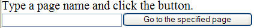

One way to organize your application is to separate the user interaction, as expressed in one Rich UI handler, from the back-end processing of business data, as expressed in a second Rich UI handler. This section outlines some mechanisms—aside from the Infobus—by which one handler can communicate with another.
Handler EmbeddingHandler type RUIHandler
{ onConstructionFunction = onConstructionFunction }
embeddedHandler EmbeddedHandler;
function onConstructionFunction()
myString STRING = "Received from somewhere";
embeddedHandler.function01(myString);
end
end
Another possibility is to cause the embedded handler to invoke a function in the embedding one. In this case, the embedding handler updates the value assigned to a delegate in the embedded handler. A delegate is a variable that references a function of a specific type; that is, the variable provides access to a function that has a specific set of characteristics.
delegate switchPart() end
The next example shows how to toggle between two web pages. Here is the embedded handler, Page2, which declares the delegate named switch:
handler Page2 type RUIHandler { onConstructionFunction = myFirstFunction,
initialUI = [content] }
content Box{children = [secondLabel, button], columns = 1};
secondLabel TextLabel{text = "page2!"};
button Button{text="switch back to first page", onClick ::= switchToFirst};
//declaration of a delegate
switch switchPart{};
function myFirstFunction()
end
function switchToFirst(e Event in)
switch();
end
end
The question is, what logic runs when switch() is invoked inside the switchToFirst? The answer is in the embedding handler, Page1, which assigns its own function to the delegate:
handler Page1 type RUIHandler
{ onConstructionFunction = myFirstFunction, initialUI = [page] }
page Box{ columns = 1, children = [firstLabel, button]};
firstLabel TextLabel{text = "page1!"};
button Button{text = "switch to page 2", onClick ::= switchTo2};
page2 Page2{};
function myFirstFunction()
page2.switch = switchBack;
end
function switchTo2(e Event in)
page.children = [page2.content];
end
function switchBack()
page.children = [firstLabel, button];
end
end
An extension of the previous example is to define a page handler (we call it MainHandler) that controls the user's subsequent navigation to any of several web pages. Again, we are creating a page-by-page flow of events, as is the traditional approach to web applications. You can start with an approach like this, keeping in mind that Rich UI lets you update parts of a web page in response to a runtime event.
delegate SwitchToPagePart( TargetPage STRING in) end
Three
Rich UI handlers are involved here. Here is the output of the first,
ButtonHandler, which shows the available options:
handler ButtonHandler type RUIHandler{initialUI = [button1, button2, button3]}
switchFunction SwitchToPagePart;
button1 Button{text = "Go To Main Page", onClick::= toMain};
button2 Button {text = "Stay Here"};
button3 Button{text = "Go to TextField", oncLick::=toText};
function toMain(e Event in)
switchFunction("MainHandler");
end
function toText(e Event in)
switchFunction("TextFieldHandler");
end
end
Here is the output of the second handler, TextFieldHandler:

handler TextFieldHandler type RUIHandler
{initialUI = [instructions, Field1, myButton]}
// a delegate
switchFunction SwitchToPagePart;
instructions TextLabel {text = "Type a page name and click the button."};
Field1 Textfield{width = 200};
myButton Button{text = "Go to the specified page", onClick ::= handleEvent};
function handleEvent(e Event in)
switchFunction(Field1.text);
end
end
handler MainHandler type RUIHandler{initialUI = [mainBox]}
mainBox Box{columns = 1, children = [mainLabel]};
mainLabel TextLabel{
text = "Click to see your options.",
onClick::= mainEvent};
buttonHandler ButtonHandler{switchFunction = switchTo};
textFieldHandler TextFieldHandler{switchFunction = switchTo};
function switchTo(target string in)
case (strlib.upperCase(target))
when ("TEXTFIELDHANDLER")
mainBox.children = [textFieldHandler.instructions,
textFieldHandler.Field1,
textFieldHandler.myButton];
when ("BUTTONHANDLER")
mainBox.children = [buttonHandler.button1,
buttonHandler.button2,
buttonHandler.button3];
when ("MAINHANDLER")
mainBox.children = [mainLabel];
end
end
function mainEvent (e Event in)
switchTo("ButtonHandler");
end
end
The embedded handler may have no widgets at all, but may call a service. As noted in Accessing a Service in Rich UI, service invocation in Rich UI is always asynchronous, which means that the requester—the Rich UI handler—continues running without waiting for a response from the service. The user can still interact with the user interface while the Rich UI handler waits for the service to respond. After the invocation, the service does some task and (in most cases) responds to the requester by invoking a function that you code in the Rich UI handler. That function is called a callback function.
delegate notifyPart() end
handler MyModel type RUIHandler { onConstructionFunction = myFirstFunction }
//declaration of a delegate
notify notifyPart{};
function myFirstFunction()
call myService.myOperation(12) returning to myCallback;
end
function myCallback(returnValue STRING)
notify();
end
end
handler MyHandler type RUIHandler { onConstructionFunction = myFirstFunction }
theModel MyModel;
function myFirstFunction()
theModel.notify = myNotification();
end
function myNotification()
// respond, perhaps by accessing details from the embedded handler
end
end